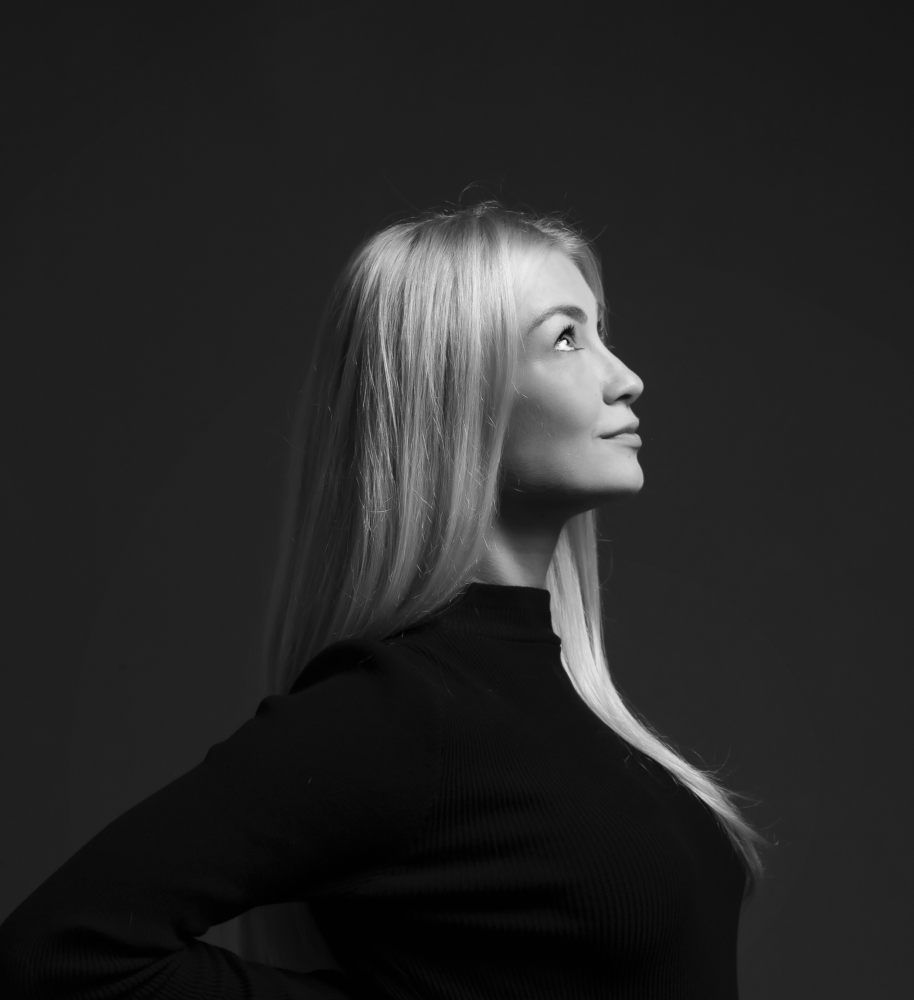

I'm the founder of Basque Breeze, an AI visual production studio working across fashion, beauty, and commercial campaigns. I direct every project end to end — brand research, art direction, generation, edit — treating AI as a production tool rather than a shortcut.
My aesthetic is minimalism: editorial eye, cinematic movement, the fashion object treated as the subject. Luxury tempo, intentional silence, and one impossible element per frame.
A black-and-white concept film for Chanel, made independently, was posted to a LinkedIn account with 12 connections. No paid promotion, no existing network at that time. Within a few days, it reached over 25,000 impressions and sparked inbound from creative leads and brand directors at Hermès, Chanel, LVMH, Louis Vuitton, Dior, Givenchy, and Gucci.